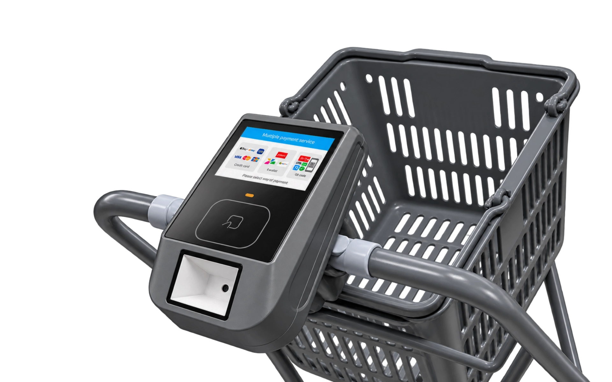
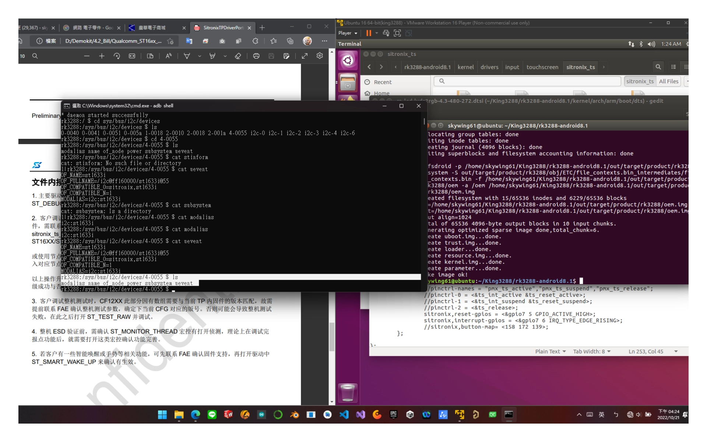
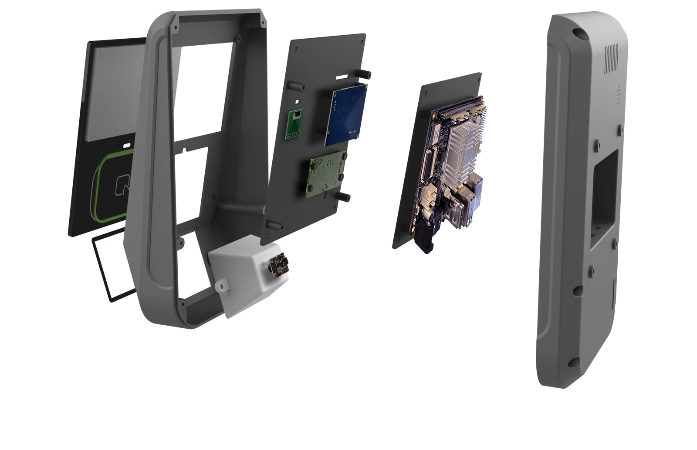

多元支付機
整合感應、掃碼與觸控，支援多元支付。
面對多元支付與店員人力有限的自助結帳情境，使用者需要清楚找到感應、掃碼與輸入位置，店面也希望減少設備堆疊。本案以 4.3 吋觸控螢幕整合感應與掃描模組，透過底層顯示與觸控配置及緊湊機構堆疊，完成可操作的支付整合樣機，讓不同付款方式能在同一操作介面完成確認。
開發範圍Android 平台 DTS 螢幕設定、I²C 觸控整合，以及工業與機構設計。

01 / ARCHITECTURE
顯示時序與觸控驅動
顯示與觸控各有獨立硬體路徑，透過 Device Tree（DTS）配置驅動及匯流排。
DTS 時序參數配置
依面板規格配置 display-timings，鎖定時脈頻率（Pixel Clock）與同步脈寬。
I²C 觸控匯流排掛載
電容觸控 IC 取樣座標，經由中斷訊號即時通知 Linux Kernel 驅動處理。
Android Input 座標映射
底層 input 事件與觸控解析度對應螢幕座標，讓感應、掃碼與輸入位置更容易操作。

02 / IMPLEMENTATION
機構堆疊與走線配置
在 4.3 吋精巧機身內整合顯示觸控總成、NFC 射頻天線、掃描模組與散熱主板，兼顧緊湊堆疊與組裝便利。
多模組空間堆疊
垂直整合螢幕、條碼掃描模組、中框固定板與核心主板，壓縮整機厚度。
射頻天線與金屬淨空
規劃 NFC 天線感應區與主板金屬件安全距離，避免刷卡訊號衰減干擾。
內部走線與組裝公差
考量 FPC 彎折半徑與內部線路走向，預留散熱風道並優化產線裝配流程。

03 / OUTCOME
多元支付操作樣機
完成 4.3 吋多元支付機之軟硬體整合，涵蓋 Android DTS 顯示時序、I²C 電容觸控與緊湊機構堆疊。實機樣機能執行卡片感應、條碼掃描與鍵盤輸入，提供清楚的支付互動流程。